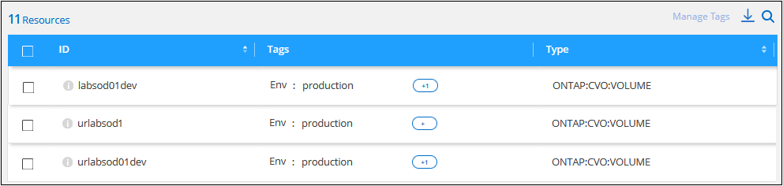

開始使用
開始使用
管理資源的標記
 建議變更
建議變更
您可以使用BlueXP標記服務來檢視、新增、修改及刪除指派給現有資源的標記。這可讓您組織及簡化資源管理。
搜尋具有特定標記的資源
如果您想要查看具有特定標記或特定標記和標記索引鍵值的所有資源、您可以搜尋這些標記。您可以搜尋所有資源、或只搜尋特定資源類別。
-
選擇*健全狀況>補救*、然後按一下*標記*索引標籤。
-
如有必要、請在* Select認證*欄位中選擇特定雲端供應商的認證資料。
-
在「資源類型_」欄位中、選取資源、例如* ONTAP：CVO：Volume *、以搜尋所有Cloud Volumes ONTAP 的各個版本。
-
在_Tag Key_欄位中、選取標籤、例如* Env*、將搜尋範圍限制在含有「Env」標籤的磁碟區。
-
在_標記值_欄位中、選取關鍵值、例如*正式作業*、將搜尋範圍限制在標記名稱為「Env」、標記值為「正式作業」的磁碟區。
-
按一下
 可將此搜尋條件新增至「搜尋」區域。
可將此搜尋條件新增至「搜尋」區域。
-
如果您已完成搜尋、請按一下*搜尋*、搜尋結果就會出現在「資源」區段中。

如果您要新增其他搜尋條件、請再次依照步驟3到6執行、然後按一下*搜尋*。
搜尋規則
定義搜尋時、適用下列規則：
-
選擇資源類型之後、如果您想要列出所有具有任何金鑰和任何金鑰值的資源、可以將「標記金鑰」欄位和「標記值」欄位保留空白。
-
您可以選擇單一搜尋、也可以定義多個搜尋、以精簡資源區段中的結果。
-
定義多組搜尋條件時：
-
如果兩項搜尋的準則是針對不同的資源類型、則這項作業會視為「OR」作業、結果會顯示兩項搜尋中的資源。例如、下列搜尋會傳回Azure NetApp Files 所有具有「Environment:demo」標記值的所有功能區、以及Cloud Volumes ONTAP 所有具有「Environment:demo」標記值的功能區。

-
如果兩次搜尋的準則是針對相同的資源類型、則會將其視為「and」（和）作業、結果只會顯示符合*二者*搜尋的資源。例如、下列搜尋會傳回Azure NetApp Files 包含「Environment:demo」標記值和「Group:Finances」標記值的支援資料。

-
-
如果您已定義多個搜尋條件、然後決定要移除一個、只要按一下即可
 可將其從搜尋區域中移除。
可將其從搜尋區域中移除。
新增標記至現有資源
您可以將標記套用至單一資源或多個資源。這些資源可能有現有的標記、或沒有目前的標記。
-
在* Tags*（標記*）標籤中、建立您的搜尋條件、然後按一下*搜尋*。
-
選取您要標記的資源。
-
若要選取頁面上的所有資源、請勾選標題列中的方塊（
 ）。
）。 -
若要選取多個資源、請核取每個資源的方塊（
 ）。
）。 -
若要選取單一資源、請按一下
 資源的圖示。
資源的圖示。
-
-
按一下*管理標記*、就會出現_資源標記_對話方塊。任何現有的標記都會顯示在此對話方塊中。

-
按一下「新增標籤」、對話方塊中會出現空白的「標籤金鑰與標籤值」列。
-
輸入標籤機碼和標籤值。如果您想要在此資源上新增更多標記、請現在新增更多標記、然後按一下*「檢閱並套用*」。
-
如果您在_檢閱_頁面中的變更看起來正確、請按一下*儲存*、新的標記就會新增至資源或所有選取的資源。
變更資源的標記值
您可以變更指派給資源的標記、也可以變更套用至現有標記的標記值。
-
在* Tags*（標記*）標籤中、建立您的搜尋條件、然後按一下*搜尋*。
-
選取您要變更標記的資源。
-
按一下*管理標記*、就會出現_資源標記_對話方塊。

-
輸入標記值的新值、然後按一下「檢閱並套用」。
-
如果您在_檢閱_頁面中的變更看起來正確、請按一下*儲存*、然後變更資源或所有選取資源的標記值。
刪除資源中的標記
您可以從單一資源或多個資源中刪除標記金鑰/值配對。
-
在* Tags*（標記*）標籤中、建立您的搜尋條件、然後按一下*搜尋*。
-
選取您要移除標記的資源。
-
按一下*管理標記*、就會出現_資源標記_對話方塊。

-
按一下
 針對您要刪除的標記金鑰/值配對、並移除該列、然後按一下*「Review and Apply （檢閱並套用）」。
針對您要刪除的標記金鑰/值配對、並移除該列、然後按一下*「Review and Apply （檢閱並套用）」。 -
如果您在_檢閱_頁面中的變更看起來正確、請按一下*儲存*、標記金鑰/值配對就會從資源或所有選取的資源中移除。